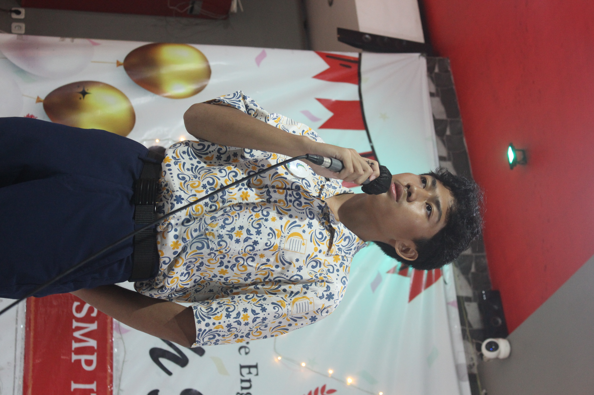

Karya Nyata dari Proses Belajar

Fath Hafif Tetaputra
Fath Hafif Tetaputra, kelas 9 Al Fath, SMPIT Al Haraki
Saya adalah seorang siswa kelas IX yang sangat ambisius dalam bidang pendidikan dan olahraga, saya gemar mencari prestasi akademi dan non akademik. Saya juga sangat senang bergaul di lingkungan sekolah, saya memiliki banyak teman teman yang baik untuk saya.
Saya menyukai pelajaran matematika dan bahasa di sekolah. Selain hal akademik, saya juga hobi bermain gitar, olahraga calisthenics, dan saya juga banyak keterampilan lainnya yang saya kuasai namun tidak terlalu diminati.
Saya memiliki cita-cita dan tujuan hidup yang sangat jelas dan kuat untuk menjadi pilot sukses di masa depan. Saya berharap dengan pendidikan yang saya jalani saat ini dan seterusnya akan mempermudah perjalanan dan mewujudkan cita-cita saya.
Selama kelas IX, saya mendapatkan pengalaman lebih banyak dari kelas-kelas sebelumnya. Saya jadi memiliki lebih banyak hobi, serta saya telah mengembangkan banyak keterampilan saya dalam bidang akademik dan non akademik. Saya juga mendapatkan banyak sekali teman baru yang baik untuk saya.